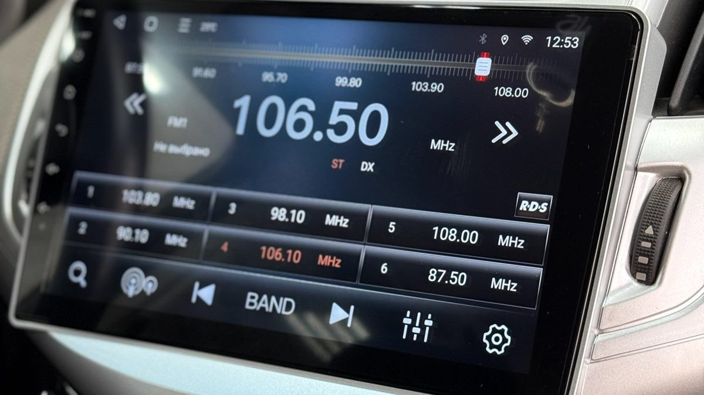

Вы садитесь в свой Solaris после работы, на улице уже темно. Телефон в держателе на дефлекторе показывает навигатор, провод зарядки болтается у рычага коробки, а маленький экран штатной магнитолы светится частотой радио, которое вы давно не слушаете. Каждый раз на Октябрьском мосту телефон съезжает вбок на стыке, и хочется, чтобы карта была просто на большом экране в панели.
Штатная магнитола Солярис – это одно из двух: родное головное устройство, с которым машина пришла с завода, или android-магнитола «штатного вида», которая встаёт на его место в рамке под панель. Для первого и второго поколения выбор устроен по-разному, и от поколения зависят рамка, проводка и то, что получится сохранить. Ниже разбираем, что стоит на вашей машине сейчас, что можно поставить вместо и где подводные камни.

Что стояло с завода: два поколения, разные панели
Первое поколение (2010–2017). В зависимости от комплектации – простая магнитола с небольшим дисплеем, CD и USB, или вовсе подготовка под магнитолу. Сенсорной мультимедиа с картами в этом поколении, как правило, нет. Панель до и после рестайлинга 2014 года отличается, поэтому рамки тоже бывают разные.
Второе поколение (2017–2022). В базовых версиях – простая магнитола с маленьким экраном. В старших комплектациях стояла мультимедиа с сенсорным экраном, к которой могла подключаться камера заднего вида. После рестайлинга 2020 года панель изменилась, и рамка для машины до рестайлинга на машину после него обычно не подходит.
Отсюда первое правило: прежде чем выбирать магнитолу, точно определите поколение, год и комплектацию. Проще всего сфотографировать центральную панель целиком: по фото мастер сразу видит, какая у вас версия.
Что значит «штатная» в объявлениях
Когда вы ищете андроид магнитолу на Солярис, почти все предложения называются «штатными». Это значит, что устройство сделано под размер и форму панели конкретной модели и вставляется в рамку без зазоров, как будто так и было. Внутри это обычная android-магнитола: свой процессор, память, экран, модуль Wi-Fi, иногда слот для SIM-карты.
От качества самого устройства зависит всё остальное. На что смотреть:
- Оперативная и встроенная память. С 2 ГБ оперативной памяти навигатор и музыка одновременно будут подтормаживать. Комфортно работают устройства с 3–4 ГБ и больше.
- Экран. IPS или QLED с хорошими углами обзора, чтобы карту было видно и с пассажирского места, и под солнцем.
- Звуковой процессор (DSP). Даёт эквалайзер, задержки по каналам и настройку под ваши динамики.
- 4G-модем. Карты и музыка работают без раздачи интернета с телефона.
- CarPlay и Android Auto. Если привыкли к своему телефону, удобнее выводить его интерфейс на экран.
Из линеек, которые хорошо знакомы установщикам, – Teyes CC3 и CC4: у них есть исполнения с рамками под Solaris, свой звуковой процессор и прошивки, которые обновляются.
Штатная магнитола Солярис 1: что учесть
Штатная магнитола Солярис 1 встаёт в рамку под 9-дюймовый экран вместо старого блока. При установке важны три вещи.
- Рамка под ваш год. До и после рестайлинга 2014 года панели разные, рамки тоже.
- Переходник под разъём машины. У первого поколения своя колодка, и хороший комплект подключается через переходник без резки родной проводки. Если когда-нибудь решите вернуть старую магнитолу или продать машину, это сделают за полчаса.
- Кнопки на руле. Если у вас они есть, их подключают к магнитоле и обучают в настройках: громкость, переключение треков, ответ на звонок.
На машинах первого поколения динамики с завода простые. Новая магнитола с DSP заметно улучшит звук, но чудес от бумажных штатных динамиков ждать не стоит: если звук важен, их меняют следующим шагом.

Штатная магнитола Солярис 2 и Хендай Солярис 2 после рестайлинга
Штатная магнитола Солярис 2 выбирается с учётом того, что уже стоит в машине. Здесь два сценария.
Была простая магнитола. Самый понятный случай. Ставят android-устройство в рамке под ваш год, подключают через переходник, переносят кнопки на руле и антенну. Если в базовой машине не было камеры, её логично поставить сразу: панель всё равно разобрана.
Была заводская мультимедиа с экраном. Перед заменой решите, что хотите сохранить. Заводская камера заднего вида, USB в нише перед рычагом коробки, микрофон для громкой связи – всё это обычно удаётся подключить к новой магнитоле, но для камеры может понадобиться адаптер. Спросите про это до покупки.
Отдельная история – штатная магнитола Хендай Солярис 2 после рестайлинга. Рамки и разъёмы для машин 2020 года и позже отличаются от ранних. Комплект «на Solaris 2» без уточнения года может не встать, и это частая причина возвратов на маркетплейсах.
Подключение: где ошибаются чаще всего
- Резка родной проводки. Скрутки вместо переходника. Через зиму окисляются, а вернуть машину в заводское состояние уже нельзя.
- Нет постоянного питания. Если магнитолу подключили только на зажигание, она каждый раз загружается с нуля и теряет настройки. Правильно – отдельный провод постоянного питания и провод зажигания.
- Антенна без питания. На части машин антенне нужно питание по проводу, без него радио ловит плохо. Решается адаптером.
- Микрофон на корпусе магнитолы. Собеседник слышит вентилятор печки. Выносной микрофон у потолочной консоли или на стойке даёт чистую связь.
- Провод GPS под панелью у металла. Спутники ищутся долго. Антенну ставят так, чтобы она «видела» небо через стекло.
Android-магнитола зимой
Ярославская зима проверяет магнитолу так же, как и всё остальное в машине.
- Холодный старт. Магнитола с режимом сна просыпается за пару секунд, как телефон. Если режима сна нет или он выключен, загрузка на морозе дольше.
- Экран на морозе. Жидкокристаллический экран в сильный холод реагирует медленнее, пока салон не прогреется. Это нормально.
- Аккумулятор. Режим сна потребляет немного, но на машине, которая стоит неделю на морозе со старой батареей, это лишняя нагрузка. Сон настраивают с ограничением по времени.
Что даёт новая магнитола звуку, а что нет
Многие ждут, что после замены магнитолы машина зазвучит по-новому. Отчасти это так. Встроенный усилитель android-устройства по мощности примерно такой же, как у заводского, но звуковой процессор позволяет настроить эквалайзер, выровнять громкость левых и правых динамиков и задать задержки так, чтобы сцена была перед водителем, а не в левой двери.
Чего магнитола не исправит: дребезг дверных карт, хрип бумажных диффузоров на громкости и гул пустой двери на басах. Это работа для замены динамиков и обработки дверей. Если звук для вас важен, обсудите с мастером сразу весь путь: сначала магнитола, потом динамики, потом, если захочется, усилитель. Тогда магнитолу подберут с нужными выходами заранее, и потом ничего не придётся переделывать.
Что спросить у мастера
- Какая рамка подойдёт на мой год и комплектацию: до или после рестайлинга?
- Подключение через переходник или с резкой проводки?
- Что сохранится из штатного: кнопки на руле, камера, USB, микрофон?
- Сколько оперативной памяти у устройства и есть ли звуковой процессор?
- Где будут стоять микрофон и антенна GPS?
Частые вопросы
Что выбрать: штатная магнитола или android с рамкой? Если родная мультимедиа устраивает, менять её смысла мало. Если стоит простая магнитола и вы держите телефон с картой на дефлекторе, android-магнитола заметно удобнее: карты, музыка, камера и громкая связь на одном большом экране.
Подойдёт ли андроид магнитола на Солярис от первого поколения ко второму? Нет. Панели разные, рамки и разъёмы тоже. Даже внутри второго поколения ранние машины и машины после 2020 года требуют разных комплектов.
Сколько стоит установка магнитолы на Хендай Солярис? Цену называют, когда известны год, комплектация и выбранное устройство. Она складывается из самой магнитолы, рамки, переходника под разъём, адаптеров для камеры или антенны и подключения кнопок на руле.
Можно ли поставить android-магнитолу на Solaris на гарантии? Обычно да, если подключение идёт через переходник без резки проводки и вы получили документы на работу. Уточните это у мастера заранее.
Будет ли работать родная камера заднего вида? В большинстве случаев её можно подключить к новой магнитоле, иногда через адаптер. Мастер проверит по вашей комплектации.
Где поставить магнитолу на Solaris в Ярославле
Студия «Звук на Волге», Ярославль, проспект Октября, 82б. Пн–пт 8:30–20:00, сб–вс 10:00–19:00. Подбираем android-магнитолу под вашу машину, ставим и настраиваем: навигатор, музыка, фильмы на стоянке, подключение регистратора и камеры заднего вида. На работы и оборудование даём гарантию, а после установки можно приехать поменять настройки или задать вопрос.
Подобрать магнитолу под ваш год и комплектацию: android-магнитолы с установкой в Ярославле. Телефон +7 902 220-75-55, сообщения в ВК: vk.me/avtostil_yaroslavl.
Нас долго знали как «Автостиль». Теперь студия называется «Звук на Волге»: так понятнее, что мы делаем со звуком в Ярославле. Адрес и мастера прежние.